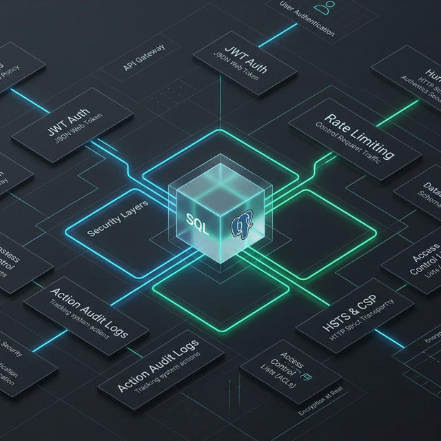

When I build a backend, security isn't an afterthought. It's the foundation. Here's a technical breakdown of the protection layers I implement in every FastAPI/PostgreSQL project.
Stateless authentication with custom expiration logic. Prevents session hijacking and ensures secure communication between the frontend and the API.
Automatic protection against Brute-Force attacks. My APIs automatically block suspicious IP behaviors to prevent unauthorized access attempts.
I implement a full traceability system. Every 'Create', 'Update', or 'Delete' action is recorded with a timestamp, IP, and User ID. Never lose track of what happened in your database.
Using PostGIS for complex location-based data and SQLAlchemy for ORM mapping, ensuring data consistency across all tables.
Full control over database versions using Alembic. This allows for zero-downtime updates and easy data restoration.